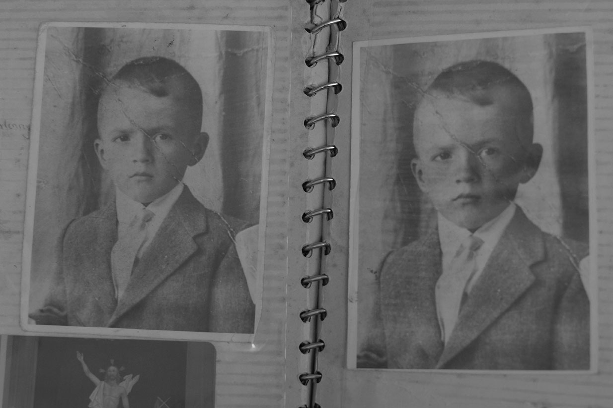
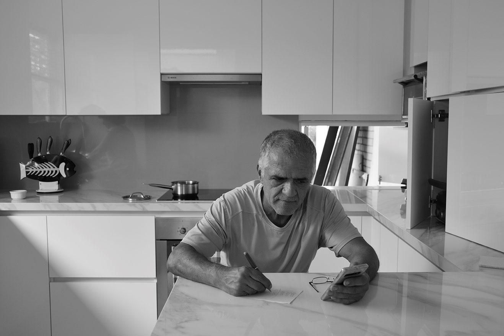
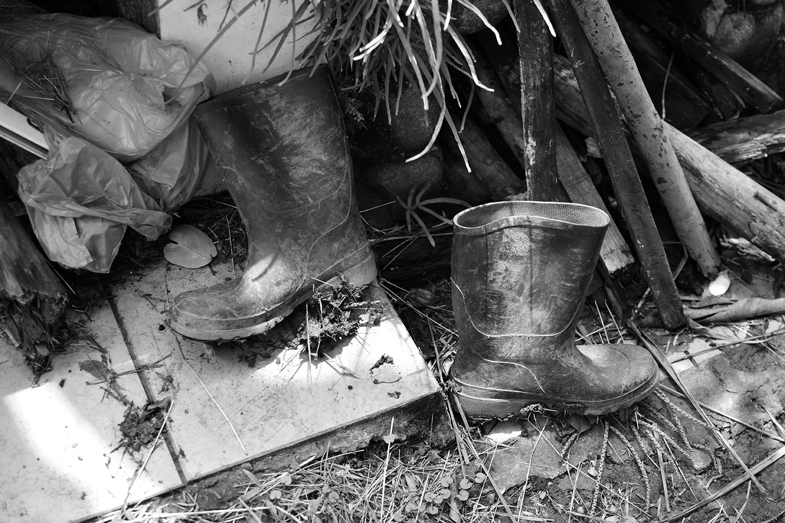
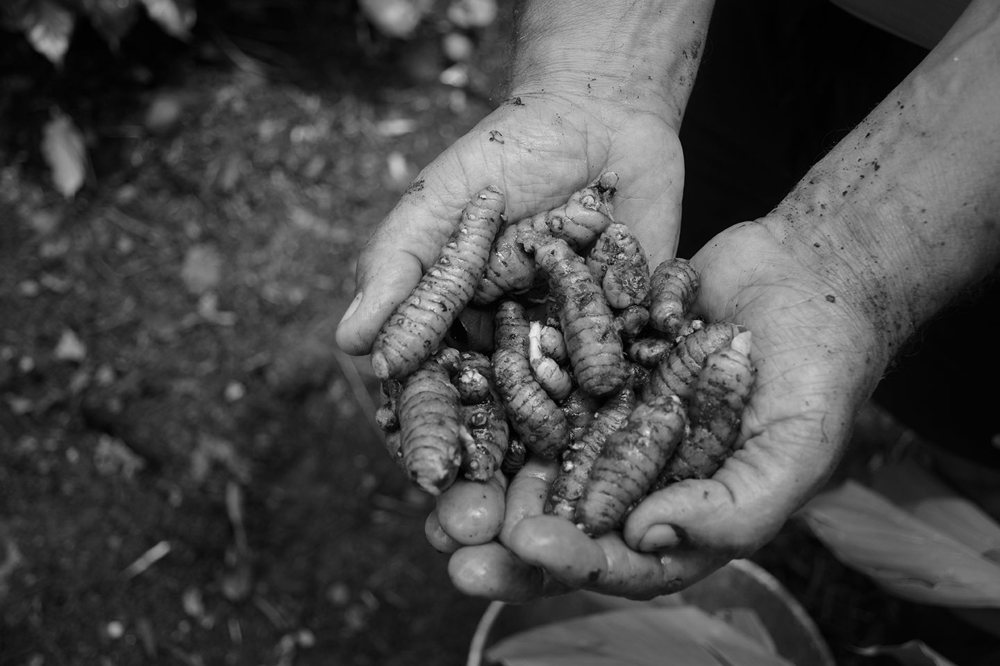

IF
En esta historia, hay un hombre apasionado por la tierra, con un alma llena de amor, empatía y compromiso. Su nombre es Guillermo o “memo” como lo llaman sus amigos. Mostrar su labor con la naturaleza, los legados que ha ido construyendo y lo que él hace la mayor parte de su tiempo, especialmente en una cuarentena que hoy hace parte de la realidad mundial es la intención del siguiente ensayo.
Guillermo nació en las montañas de Antioquia, en una casita en el campo, y vivió hasta los 6 años de edad en una vereda de Marinilla, un lugar reconocido por su larga tradición en panadería, las raíces de su presente. Sus padres decidieron irse a vivir al pueblo para darle estudio a él y a sus 6 hermanos. Al poco tiempo, su padre enfermó y murió. Por su parte, su madre entregó todas sus fuerzas y amor a la crianza de sus siete hijos y dedicó gran parte de su tiempo a la siembra y la cosecha en el solar de su casa, siendo esto un sustento para Guillermo y sus pequeños hermanos.
Aunque su adolescencia transcurrió en el pueblo, sus añoranzas por el campo y su vereda siempre estuvieron presentes, por eso todas sus vacaciones volvía al lugar que lo vio nacer para reencontrarse con su abuelo y familiares. De esta forma pasaron los años hasta que terminó el bachillerato y emprendió un nuevo viaje con una maleta llena de sueños y metas. Así es como llegó a Cali, donde empezó a trabajar fuertemente junto con uno de sus hermanos, hasta lograr el sueño de tener su propia empresa.

Gracias a su empeño y su ardua labor en su empresa, logró en el año 2009 otro de sus sueños: conseguir una casa en las afueras de Cali. Un sueño hecho realidad que le permitió reconectarse con la tierra, sembrar y cosechar. Sus días transcurrían en su empresa y en sus tiempos libre se dedicaba a la tierra. Sin embargo, ahora en la cuarentena, se ha extendido su tiempo de reconexión y expresión de amor con la tierra. Todas las mañanas al despertar y justo cuando sale el sol, empieza su tarea, o más bien su pasión. Recoge los residuos orgánicos de su casa y los lleva al compostaje, quita las malezas, siembra y cosecha. En su huerta, su gran orgullo, ha sembrado aguacate, café, cúrcuma, cilantro, limoncillo, limones, mandarina, arracacha, albahaca, romero, tomillo, citronela, tomate, cebollín y pimentón. En su labor con la tierra siempre está acompañado de sus gallinas y del dulce y melodioso sonido de los pájaros.

En conclusión, nosotros los seres humanos independientemente que pase o no la cuarentena en este semestre, nos ha demostrado que no solo por una pandemia como el Covid-19, debemos siempre realizar una correcta y debida limpieza, para así evitar otros tipos de contagios que se pueden adquirir fácilmente, entre ellos: neumonía, tuberculosis, hepatitis B, cólera, salmonelosis etc, lo positivo de esta vivencia es que hemos tomado conciencia de más cuidados a los que comúnmente realizábamos y hasta evitamos futuros gastos innecesarios, salvemos nuestras vidas, cuidemos de los demás personas y cuidémonos nosotros mismos